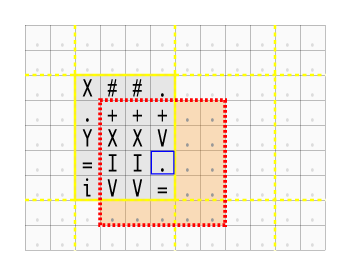
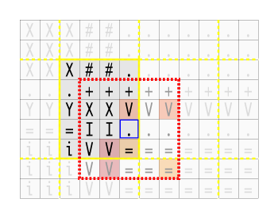
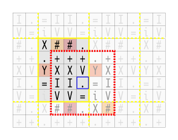
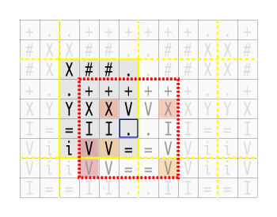

| Kürzel: | asciishop-A09-PP |
| Name: | AsciiShop, Runde#9 |
| Kette: | Asciishop PP |
| Kategorie: | Bildverarbeitung |
Mitgelieferte Datei(en): asciishop-A09-bonus1.o2, asciishop-A09-bonus1.o1, asciishop-A09-bonus1.i2, asciishop-A09-bonus1.i1
Abzugebende Datei(en): ClearFactory.java, BinaryOperation.java, FactoryException.java, LoadOperation.java, AsciiImage.java, AsciiPoint.java, LoadFactory.java, AsciiShop.java, FilterOperation.java, ReplaceOperation.java, ClearOperation.java, Operation.java, Factory.java, FilterFactory.java, OperationException.java, BinaryFactory.java, AverageOperation.java, ReplaceFactory.java, MedianOperation.java
Optional abzugebende Datei(en): AsciiStack.java, AsciiStackNode.java, ReplicateBlockGenerator.java, XBlockGenerator.java, BlockGenerator.java, CircularBlockGenerator.java, GrowRegionFactory.java, LineOperation.java, LineFactory.java, TransposeOperation.java, SymmetricBlockGenerator.java, GrowRegionOperation.java, TransposeFactory.java, FillFactory.java, FillOperation.java
Ausführbar: AsciiShop
Die Klasse AsciiShop ist zu erstellen und soll eine ausführbare Klasse sein und muss daher die public static void main(String[] args) Methode beinhalten. Ihr Programm wird automatisch auf Korrektheit überprüft. Die Überprüfung erfolgt durch die Ausführung der als ausführbar bezeichneten Klasse (AsciiShop).
Das Programm erstellt im ersten Schritt ein leeres Bild, auf dem dann unterschiedliche Operationen ausgeführt werden können. Neben den in der Vorrunde implementierten Operationen, steht noch ein weiterer Filter zur Verfügung.
| Aufgabenstellung | Klassen und Methoden | Ein- und Ausgabedaten | Bewertung und Kriterien |
| Hinweise | FAQ | Fehlerbehandlung | Testen |
In den beiden vorhergehenden Übungsrunden wurde Schritt für Schritt der Code besser strukturiert und so übersichtlicher und leichter wartbar gemacht. In dieser Runde soll daraus Nutzen gezogen und neue Operationen hinzugefügt werden. Bei dem neuen Filter steht wiederum Coderefaktorisierung durch Vererbung im Mittelpunkt.
Das Erzeugen eines neuen Bildes erfolgt, wie in Runde 7 spezifiziert, mit Hilfe des Befehls create, der neben den beiden Parametern Breite und Höhe des zu erzeugenden Bildes auch den Zeichensatz des Bildes erwartet. Dies ist ein String, der alle im Bild erlaubten Zeichen beinhaltet. Der Zeichensatz gibt außerdem eine Ordnung der Zeichen vor, so ist das erste Zeichen das dunkelste und das letzte das hellste. Jedes Zeichen stellt somit eine Farbe dar. Das hellste Zeichen wird außerdem als Farbe für ein neu erzeugtes Bild sowie beim Löschen des Bildinhaltes bei Eingabe des Befehls clear verwendet.
Der create Befehl muss der erste eingegebene Befehl sein. Sie dürfen davon ausgehen, dass sowohl die eingegebene Breite und Höhe als auch der Zeichensatz gültig sind und müssen daher diesen Fehlerfall nicht behandeln.
Das leere Bild kann mit Daten gefüllt werden. Dazu stehen verschiedene Befehle zur Verfügung, darunter der Befehl load. Dieser Befehl (und damit das Einlesen von Bildern von der Standardeingabe) ist für ein gültiges Bild nicht zwingend erforderlich.
Die folgenden Befehle sind zulässig, neue und veränderte Befehle sind farblich hervorgehoben, nicht mehr geforderte durchgestrichen:
binary threshold wandelt das Bild in ein Binärbild um, sodass alle Zeichen, die im Zeichensatz vor dem Zeichen threshold stehen, auf das dunkelste Zeichen gesetzt werden und alle Zeichen ab und inklusive threshold auf das hellste Zeichen des Zeichensatzes gesetzt werden.clear löscht den gesamten Bildinhalt, alle Pixel des Bildes werden auf das letzte Zeichen des Zeichensatzes des Bildes gesetzt.filter type filtert das Bild mit dem im type spezifizierten Filter. Als Typen sind ‘median’ und ‘average’ zulässig. Wird als Paramater (type) ein unbekannter Filter angegeben, soll keine Filterung durchgeführt und "INPUT MISMATCH" ausgegeben werden.load eof liest ein Bild zeilenweise ein und speichert es in das anfangs mit create erzeugte Bild. Um das Ende der Eingabe zu erkennen, wird als Parameter eine Zeichenkette (eof) angegeben, die das Ende der Bildeingabe kennzeichnet. Fehlt dieses so wird "INPUT MISMATCH" ausgegeben. Entspricht die Höhe und Breite des eingelesenen Bildes nicht exakt jener des mit create erzeugten Bildes, so soll "OPERATION FAILED" ausgegeben werden.print gibt das ASCII-Bild gefolgt von einer Leerzeile aus. Im Gegensatz zu früheren Runden, erfolgt die Ausgabe nicht mehr automatisch am Ende des Programms, sondern nur bei Eingabe dieses Befehls.replace oldChar newChar ersetzt alle Vorkommen eines bestimmten Zeichens (oldChar) im Bild durch ein anderes Zeichen (newChar).undo macht einen Befehl rückgängig. Gibt es keinen weiteren Befehl, der rückgängig gemacht werden kann, soll "STACK EMPTY" ausgegeben werden. Im Gegensatz zu vorherigen Runden, wird die Stack Belegung nun nicht mehr ausgegeben.
Alle hier aufgeführten Befehle können in beliebiger Reihenfolge auftreten. So kann zum Beispiel nach create erst print und danach load folgen. Die genannten Befehle binary, clear, filter, load und replace haben entsprechende Klassen, die die Funktionalität implementieren.
Neben dem bestehenden Medianfilter soll als weiterer Filter der Mittelwertfilter implementiert werden. Beiden gemeinsam ist das Arbeiten auf einem Block einer bestimmten Größe. Diese Charakteristik erfordert, dass in beiden Operationen mit entsprechenden Schleifen über das Bild iteriert wird, dann für jeden Pixel der entsprechende jeweilige Block bestimmt und daraus das Ergebnis berechnet wird. Bis auf die Berechnung des Ergebnisses sind beide Filter gleich. Naheliegend ist hier diese gemeinsame Funktionalität in eine abstrakte Basisklasse zusammenzufassen.
Die Aufteilung erfolgt so: Diese Basisklasse durchläuft das Bild und erstellt für jeden Pixel den Block der umgebenden Pixel. Die konkrete Implementierung der Filterung wird in den konkreten Klassen durchgeführt, in diesem Fall die Berechnung des Mittelwerts oder des Medians, jeweils ausgehend vom vorher erstellten Block.
Sie können zu Übungszwecken, nach dem Muster der anderen Operationen, Klassen für die Befehle grow, line, transpose, sowie fill entsprechend der Spezifikationen der Vorrunden implementieren. Sie können diesen Klassen auch die entsprechenden Befehle zuordnen, dies wird jedoch nicht getestet.
Bonusaufgaben werden nicht im Online-System getestet, die Beurteilung erfolgt erst während des Abgabegesprächs.
Aufbauend auf dem geforderten Median- und dem Average-Filter sollen mehr Variationen ermöglicht werden. So soll als weiteres Parameter zuerst die Größe des Filter angegeben werden können und als zweites die Randbehandlung. Als Größenangabe sind ungerade Zahlen größer 1 zugelassen. Wird keine Größe angegeben, so soll 3 angenommen werden. Wird eine unzulässige Größe angegeben, so liegt ein Fehlerfall vor.
Als Randbehandlungen sind neben dem bereits implementierten ‘x’ auch noch ‘circular’, ‘replicate’ und ‘symmetric’ zulässig. Wird keine Randbehandlung angegeben, so soll das Standardverfahren (‘x’) angewandt werden. Wird eine unbekannte Randbehandlungsmethode angegeben, so liegt ein Fehlerfall vor. Um die entsprechenden Parameter einzulesen, dürfen Sie davon ausgehen, dass der gesamte filter-Befehl alleine und vollständig in einer Zeile steht. Es können sowohl Größe als auch Randbehandlung angegebenen werden, jedoch auch einer oder beide Parameter fehlen.
|  |
Randbehandlung (X) Für die hier dreizehn Blockpunkte in dem über das Bild hinausragenden Bereich Bereich (farbig hinterlegt) wird explizit die Hintergrundfarbe, in diesem Fall ‘ .’, verwendet.
|
|  |
Randbehandlung (Replicate) Hierbei werden die am Rand befindlichen Pixel über den Bildrand hinweg fortgesetzt. Einige korrespondierende Pixel sind farbig hervorgehoben. |
|  |
Randbehandlung (Circular) Hierbei wird quasi das Bild mehrfach nebeneinander gelegt, direkt an die letzte Spalte schließt die erste Spalte an und analog für die Zeilen. Einige korrespondierende Pixel sind farbig hervorgehoben. |
|  |
Randbehandlung (Symmetric) Bei dieser Randbehandlung wird das Bild entlang der Kanten gespiegelt. Einige korrespondierende Pixel sind wiederum farbig hervorgehoben. |
Erstellen Sie für jede der vier Randbehandlungsmethoden eine eigene Klasse (XBlockGenerator, CicularBlockGenerator, ReplicateBlockGenerator und SymmetricBlockGenerator). Alle diese Klassen sollen eine Methode public int[] getBlock(AsciiImage img, int x, int y) zur Verfügung stellen, die den Block für die Stelle (x,y) in Form eines eindimensionalen int-Arrays zurückgibt. Dieses Array umfasst die Helligkeitswerte der Pixel des Blocks Zeile für Zeile. Jede dieser Klassen soll auch einen Konstruktor haben, dem die Größe des quadratischen Blocks übergeben werden kann.
Erzeugen Sie außerdem ein Interface oder eine abstrakte Basisklasse BlockGenerator, von der die drei oben genannten Klassen abgeleitet sind. Passen Sie die Filter-Operationen entsprechend an, sodass im Konstruktor eine konkrete BlockGenerator Instanz übergeben werden kann. Implementieren Sie die Block Generatoren so, dass Sie doppelten Code vermeiden. Dafür kann es sinnvoll sein BlockGenerator als abstrakte Basisklasse auszuführen und weitere Methoden einzuführen.
Die Klasse FilterFactory ist für das Einlesen der Parameter und für das Erzeugen der konkreten BlockGenerator Instanzen, sowie der konkreten FilterOperation Instanzen zuständig. Überprüfen Sie hier auch die spezifizierten Fehlerfälle und geben Sie im Fehlerfall "INPUT MISMATCH" aus und brechen Sie die weitere Verarbeitung ab.
Die folgende Aufzählung umfasst geforderte Methoden, neue, veränderte und geerbte Methoden sind farblich hervorgehoben, gegenüber der Vorrunde nicht mehr geforderte durchgestrichen. Sie können nach Bedarf Hilfsmethoden und Methoden für freiwillige Aufgaben (Bonusaufgaben, Übungsaufgaben) hinzufügen. Achten Sie auf die korrekte Datenkapselung. Insbesondere sollen Sie sinnvolle Zugriffsmodifikatoren für Variablen (und Methoden) verwenden.
main-Methode. Sie verarbeitet die Eingaben, erzeugt das AsciiImage und gibt das Ergebnis aus. Methoden dieser Klasse lesen direkt von System.in ein und geben direkt auf System.out aus.
public static void main(String[] args)public AsciiImage(int width, int height, String charset)IllegalArgumentException. Werfen Sie auch eine IllegalArgumentException, falls das charset ein Zeichen doppelt enthält oder gar keine Zeichen umfasst.public AsciiImage(AsciiImage img)public String getCharset()public int getHeight()public char getPixel(int x, int y)IndexOutOfBoundsException.public char getPixel(AsciiPoint p)IndexOutOfBoundsException.public ArrayList<AsciiPoint> getPointList(char c)public int getWidth()public void setPixel(int x, int y, char c)IndexOutOfBoundsException, falls das Zeichen c nicht dem Zeichensatz des Bildes entspricht (sprich nicht im charset enthalten ist).public void setPixel(AsciiPoint p, char c)IndexOutOfBoundsException, falls das Zeichen c nicht dem Zeichensatz des Bildes entspricht (sprich nicht im charset enthalten ist).public String toString()public AsciiPoint(int x, int y)public int getX()public int getY()public String toString()(x,y) zurück.AsciiImage-Objekten speichern, wobei der Zugriff immer nur auf das oberste Element möglich ist. Sie können eine ihrer Implementierung dieser Klasse (ggfs. zusammen mit AsciiStackNode) aus den Vorrunden nutzen oder die vorgefertigte Klasse java.util.Stack verwenden.
public AsciiStack()public boolean empty()public AsciiImage pop()null zurückgegeben werden. Sind nach dem Entfernen mehr als increment Plätze leer, so soll der Stack um increment verkleinert werden. Jedoch soll der Stack nie kleiner als increment sein, sprich wenn alle Elemente entfernt wurden, soll die Kapazität des Stacks gleich increment sein.public AsciiImage peek()null zurückgegeben werden.public void push(AsciiImage img)AsciiImage oben auf den Stack. Ist der Stack zu diesem Zeitpunkt voll, so soll der Stack um increment vergrößert werden um so das Bild speichern zu können.public int size()
Die folgenden Klassen dienen zur Umsetzung bestimmter Bildoperationen bzw. der Erzeugen dieser. Die Bildoperationen implementieren das Interface Operation, die erzeugenden Klassen das Interface Factory, entsprechend der weiter unten beschriebenen Interfaces.
extends FilterOperationpublic AverageOperation()AverageOperation.public AsciiImage execute(AsciiImage img)FilterOperationpublic int filter(int[] values)implements FactoryBinaryOperations.
public BinaryFactory()BinaryFactory.public Operation create(Scanner scanner) throws FactoryExceptionScanner das Schwellwert Zeichen ein, erzeugt damit eine neue BinaryOperation und gibt diese zurück. Tritt beim Einlesen des Zeichens ein Fehler auf, so wird eine FactoryException geworfen.implements OperationAsciiImage in ein Binärbild um.
public BinaryOperation(char threshold)BinaryOperation mit dem entsprechenden Schwellwert.public AsciiImage execute(AsciiImage img) throws OperationExceptionAsciiImage vorkommen, so wird eine OperationException geworfen.implements FactoryClearOperations.
public ClearFactory()ClearFactory.public Operation create(Scanner scanner)ClearOperation und gibt diese zurück.implements Operationpublic ClearOperation()ClearOperation.public AsciiImage execute(AsciiImage img)AsciiImage zurück, das dem übergebenen AsciiImage entspricht, wobei alle Zeichen auf das hellste Zeichen, sprich dem letzten Zeichen im Zeichensatz des Bildes, gesetzt sind.implements FactoryMedianOperations und AverageOperations.
public FilterFactory()FilterFactory.public Operation create(Scanner scanner) throws FactoryExceptionMedianOperation (bei ‘median’) oder eine neue AverageOperation (bei ‘average’) zurück. Ist der Typ unbekannt, so wird eine FactoryException geworfen.implements Operationfilter eine Schablone (Template) für die konkreten Filter Operationen.
public FilterOperation()FilterOperation.public AsciiImage execute(AsciiImage img)public abstract int filter(int[] values)implements FactoryLoadOperations.
public LoadFactory()LoadFactory.public Operation create(Scanner scanner) throws FactoryExceptioneof-String ein und übergibt in einem String alle Zeilen bis zum abschließenden eof-String durch Zeilenumbrüche getrennt an den Konstruktor der LoadOperation. Tritt beim Einlesen ein Fehler auf (eof fehlt), so wird eine FactoryException geworfen.implements OperationAsciiImage.
public LoadOperation(String data)LoadOperation mit den entsprechenden Bilddaten. Diese Bilddaten liegen als String vor, wobei die Bildzeilen durch Zeilenumbrüche (‘\n’) getrennt sind.public AsciiImage execute(AsciiImage img) throws OperationExceptionAsciiImage zurück, das von Größe und Zeichensatz dem übergebenen AsciiImage entspricht und in das die Daten geladen wurden. Tritt beim Laden ein Fehler auf (zu wenige oder zu viele Daten bzw. ungültige Zeichen), so wird eine OperationException mit einer entsprechenden Fehlermeldung geworfen.extends FilterOperationpublic MedianOperation()MedianOperation.public AsciiImage execute(AsciiImage img)FilterOperationpublic int filter(int[] values)implements FactoryReplaceOperations. Diese Klasse wurde zu Anschauungszwecken vollständig implementiert in Runde 8 zur Verfügung gestellt, sie können diese Klasse jedoch auch selber implementieren.
public ReplaceFactory()ReplaceFactory.public Operation create(Scanner scanner) throws FactoryExceptionScanners zwei Zeichen ein und gibt eine damit initialisierte neue ReplaceOperation zurück. Tritt beim Einlesen ein Fehler (zu wenig Parameter), so wird eine FactoryException geworfen.implements Operationpublic ReplaceOperation(char oldChar, char newChar)ReplaceOperation die alle Zeichen oldChar durch newChar ersetzt.public AsciiImage execute(AsciiImage img) throws OperationExceptionAsciiImage zurück, in dem alle Vorkommnisse des Zeichen oldChar durch das Zeichen newChar ersetzt worden sind. Falls das neue Zeichen nicht im Zeichensatz des AsciiImage enthalten ist, soll eine neue OperationException mit entsprechender Fehlermeldung geworfen werden.Interfaces und Exceptions.
extends ExceptionException und wird zum Behandeln aller Fehlerfälle, die in einer Factory, also beim Einlesen von Parametern oder dem Erzeugen eines Befehls, auftreten, eingesetzt. Sie können bei Bedarf auch noch weitere Konstruktoren definieren.
public FactoryException()FactoryException. Ruft den entsprechenden Super-Konstruktor in der Klasse Exception auf.public FactoryException(String message)FactoryException mit der entsprechenden Fehlerbeschreibung. Ruft den entsprechenden Super-Konstruktor in der Klasse Exception auf.public Operation create(Scanner scanner) throws FactoryExceptionOperation. Welche konkrete Operation erzeugt wird, hängt von der implementierenden Factory ab. Bei Bedarf liest diese Methode vom übergebenen Scanner Parameter ein. Sollten Parameter fehlen oder von einem falschen Typ sein, so soll eine FactoryException geworfen werden.extends ExceptionException und wird zum Behandeln aller Fehlerfälle, die beim Ausführen von Operationen auftreten, eingesetzt. Sie dürfen bei Bedarf auch noch weitere Konstruktoren definieren.
public OperationException()OperationException. Ruft den entsprechenden Super-Konstruktor in der Klasse Exception auf.public OperationException(String message)OperationException mit der entsprechenden Fehlerbeschreibung. Ruft den entsprechenden Super-Konstruktor in der Klasse Exception auf.public AsciiImage execute(AsciiImage img) throws OperationExceptionAsciiImage zurück. Das übergebene AsciiImage wird von der Methode nicht verändert. Mögliche Parameter der Operation müssen im Konstruktor übergeben werden. Sollte beim Ausführen der Operation ein Fehler auftreten, so soll eine OperationException geworfen werden.
Beachten Sie die allgemeinen Hinweise zur Installation und zur Ein-/Ausgabe, sowie zur Abgabe und zur Beurteilung in den FAQ.
| Wenn Sie Fragen zur Implementierung oder auch zu Java haben, können Sie das Informatik-Forum nutzen. Im Rahmen der wöchentlichen Laborien stehen Tutoren für Fragen zur Verfügung. | ||
| Informatik-Forum | Laborien | |
Der erste Befehl muss create, gefolgt von Breite und Höhe sowie dem Zeichensatz des Bildes sein. Danach können in beliebiger Reihenfolge beliebige viele der oben definierten Befehle folgen. Beachten Sie jedoch, dass der create Befehl nur einmal (nämlich als erster Befehl) auftreten darf. Sie dürfen davon ausgehen, dass die mittels load eingelesenen Bilddaten keine Leerzeichen enthalten. Sie können weiters davon ausgehen, dass die gesamte Eingabe nicht leer ist.
Bei jedem Aufruf von print soll das Bild korrekt formatiert und von einer Leerzeile gefolgt, ausgegeben werden. Wird undo eingegeben, so wird, falls der Stack leer ist, "STACK EMPTY" ausgegeben. Im Gegensatz zur vorherigen Runde, wird die Stack Belegung nun nicht mehr ausgegeben.
Geben Sie "INPUT MISMATCH" aus und brechen Sie die weitere Verarbeitung ab, falls einer der folgenden Fehler auftritt:
createload-Befehl fehlt das eof Parameter oder das abschließende eoffilter hat unzulässige Parameter (z.B. einen unbekannten Typ).Geben Sie auch "INPUT MISMATCH" aus, falls bei der Erzeugung eines Befehls eine FactoryException auftritt. Geben Sie bei allen Fehlern, die in einer Operation Klasse ausgelöst werden (also bei denen eine OperationException geworfen wird), "OPERATION FAILED" aus und brechen Sie die weitere Verarbeitung ab. Dies sind insbesondere folgende Fälle:
load-Befehl und dem Endzeichen sind mehr oder weniger Zeilen als das Bild hatGeben Sie "UNKNOWN COMMAND" aus und brechen Sie die weitere Verarbeitung ab, falls einer der folgenden Fehler auftritt:
create folgt (später) ein unbekannter Befehl.create folgt (später) erneut der Befehl create.
|
||||||
|